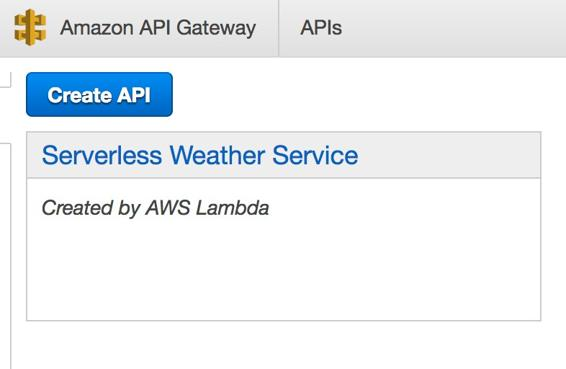
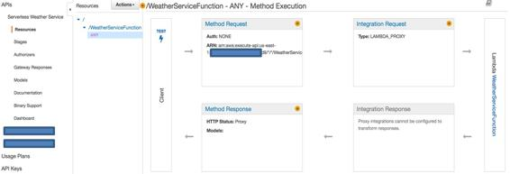
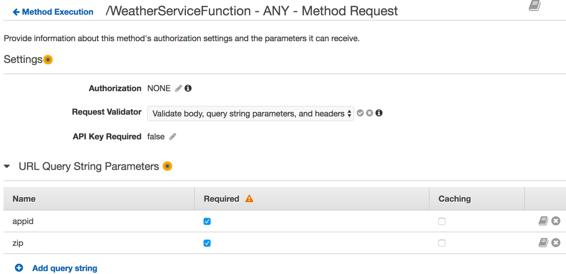

Configuring the Amazon API Gateway
After performing the preceding steps, go to the Amazon API Gateway service in the AWS Console and you should see an API like the following already created:

Now, let's configure this API to match our needs:
- Click on the API's name, Serverless Weather Service, to drill down into its configuration.
- Select the Resources option on the left-hand side and then on the right-hand side, expand the resources to show /WeatherServiceFunction/ANY and you should see its details as follows:

- Click on Method Request and expand the URL Query String Parameters option. Under that, use the Add query string button to add the following parameters:
- Set the name to zip and check the Required checkbox.
- Add another parameter, set the name to appid, and check the Required checkbox.
- In the preceding pane, select the Request Validator option and set its value to Validate body, query string parameters, and headers.
- After completing the preceding settings, your Method Execution screen should look as follows:
